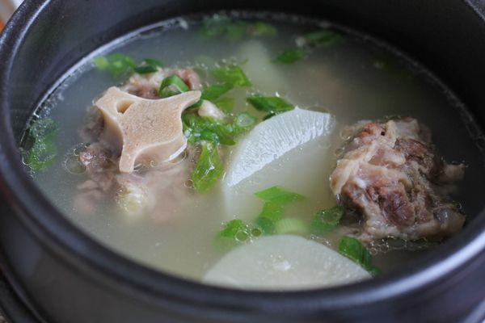

Ox Tail Soup

Description
There are many Korean dishes that are fairly well known, especially as Korean food has
become more mainstream. These include kalbi, bulgogi, korean chicken wings, etc. Oh,
and kimchi of course! However, one of my favorite favorite dishes growing up
was oxtail soup.
This was primarily a colder weather dish, for late autumn through winter. I remember
my halmoni would make a large pot of this, and I'd come get some and drop in a scoop
of rice. Mmm... it was best a day or 2 later though, as that allowed the flavors to
meld together more.
Ok yeah, that part about my halmoni was made up. Growing up, my only living halmoni
was in Korea while I was in the suburbs of Chicago. But the rest of it is true!
Ingredients
- Oxtails
- Radishes
- Salt
- Pepper
- Green Onions (optional)
Steps
- Soak your oxtails. These will likely have little hairs, blood, etc. on them.
You want to get them in a large bowl and let it sit for at least 10 minutes.
- Get your oxtails in a pot of water. You'll bring it to a boil, but then you'll
want to remove your oxtails (you can use the bowl you used for soaking if you've
rinsed it out) so that you can dump the water. This will likely have a lot of the
gunk that'll have come off the meat.
- Put your oxtails in a pot of fresh water (again). This time, you can keep the water
although you'll still need to skim it sometimes.
- Let it boil for a while.
- Once it softens up enough (after a few hours likely) cut up your radishes and drop
those pieces into the pot also.
- Once everything is soft, remove from heat. Oh, add salt and pepper. You can also
garnish with the green onion, but I often forget to buy this ingredient.